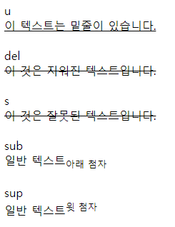

HTML 기본 1
기존 1일차에 지나간 내용에 조금 더 살을 붙여 다양한 HTML 태그를 직접 사용해봅니다.
HTML의 태그 목록은 https://www.w3schools.com/TAGS/default.ASP 에서 확인 가능합니다.
1일차 2장 복습
h1 ~ h6
헤딩을 표현하기 위한 태그입니다.
h1이 가장 큰 제목이고, h6가 가장 작은 제목입니다.
<h1>This is heading 1</h1><h2>This is heading 2</h2><h3>This is heading 3</h3><h4>This is heading 4</h4><h5>This is heading 5</h5><h6>This is heading 6</h6>
p
문단을 표현하기 위한 태그입니다.
block 단위 요소로 세로축 정렬입니다.
xxxxxxxxxx<p>이것은 하나의 문단입니다.</p>
br
줄바꿈을 표현하기 위한 태그입니다.
내용을 가지지 않는 태그로 스스로 닫을 수 있습니다.
xxxxxxxxxx<p>이것은 하나의 문단입니다.<br/>여기서 부터는 줄이 바뀝니다.</p>
center
내용을 가운데 정렬하기 위한 태그입니다.
xxxxxxxxxx<center> <p>이 문단은 가운데 정렬 됩니다.</p></center>
pre
HTML에서 탭, 엔터, 스페이스 등의 서식을 그대로 표현하기 위한 태그입니다.
xxxxxxxxxx<pre> 이 텍스트는 ' ' 긴 띄어쓰기와 ' '탭 ' ' 엔터가 그대로 적용됩니다.</pre>
hr
가로줄을 표현하기 위한 태그입니다.
br처럼 스스로 닫을 수 있습니다.
xxxxxxxxxx<hr />
div
구역을 표현하기 위한 태그입니다.
block 단위의 요소를 표현합니다.
xxxxxxxxxx<div> <h1> 제목 1 </h1> <p> 내용 1 </p></div><div> <h1> 제목 2 </h1> <p> 내용 2 </p></div>
span
한개의 글자 구성을 표현하기 위한 태그입니다.
inline 형태의 요소입니다.
xxxxxxxxxx<span>이 것은 하나의 내용입니다.</span>
i
이태릭 체를 표현할 때 사용합니다.
xxxxxxxxxx<i>italic 글씨체</i>
b
두꺼운 글씨를 표현할 때 사용합니다.
xxxxxxxxxx<b>이 것은 두꺼운 글씨입니다.</b>
img
이미지를 표현하기 위한 태그입니다.
xxxxxxxxxx<img src="{이미지 주소}"/>
input
입력을 받기 위한 태그입니다.
다양한 type을 가질 수 있습니다.
xxxxxxxxxx<input type="text" /><input type="password" /><!-- ... -->
button
버튼을 표현하기 위한 태그입니다.
xxxxxxxxxx<button> 버튼 </button>
해당 내용에 대한 문서는 아래 주소에서 확인할 수 있습니다.
https://web.esllo.com/days/day1-2.html
새로운 HTML 태그
기존 1일차에 언급하지 않았던 태그에 대해 짚고 넘어갑니다.
li
리스트의 한 요소을 표현하기 위한 태그입니다.
ul 또는 ol의 자식으로 사용됩니다.
xxxxxxxxxx<ul or ol> <li>사과</li> <li>자몽</li> <li>수박</li></ul or ol>
ul
순서가 없는 리스트를 표현하기 위한 태그입니다.
xxxxxxxxxx<ul> <li>사과</li> <li>자몽</li> <li>수박</li></ul>
ol
순서가 있는 리스트를 표현하기 위한 태그입니다.
xxxxxxxxxx<ol> <li>사과</li> <li>자몽</li> <li>수박</li></ol>
ol과 ul의 차이는 ol은 숫자형태로, ul은 점 형태로 글머리를 표현합니다.

a
링크를 표현하기 위한 태그입니다.
href를 사용하여 다른 페이지로 이동할 수 있습니다.
target을 통해 열리는 대상 탭을 지정할 수 있습니다.
x<!-- 새 탭에서 열기 --><a href="https://www.google.com" target="_blank">구글</a>
<!-- 현재 탭에서 열기 --><a href="https://www.cloudflare.com" target="_self">클라우드 플레어</a>
<!-- target="_self" 인 경우 생략할 수 있습니다. --><a href="https://www.cloudflare.com">클라우드 플레어</a>
select
선택을 구현하기 위한 태그입니다.
option태그와 함께 사용되며 input처럼 선택된 값을 받기 위해 사용됩니다.
xxxxxxxxxx<select> <option value="사과">사과</option> <option value="자몽">자몽</option> <option value="수박">수박</option></select>
audio
음성 파일을 표현하기 위한 태그입니다.
기본적으로 기본 플레이어가 자동으로 입혀지며, JS를 통해 직접 플레이어를 구현할 수 있습니다.
다양한 속성을 가지고 있으며 src를 제외한 옵션은 선택사항 입니다.
xxxxxxxxxx<audio src="{오디오 파일 주소}" autoplay controls loop muted preload />
<!-- 다양한 브라우저에서 동일한 재생을 위해 여러 확장자를 사용할 수도 있습니다. --><audio> <source src="{오디오.ogg}" type="audio/ogg" /> <source src="{오디오.mp3}" type="audio/mp3" /> 브라우저가 오디오를 지원하지 않습니다.</audio>
video
영상 파일을 표현하기 위한 태그입니다.
audio처럼 플레이어가 입혀지며 JS를 통해 직접 구현할 수 있습니다.
audio와 동일한 속성을 지원하며 추가로 poster라는 미리보기 이미지 링크를 지원합니다.
xxxxxxxxxx<video src="{영상 파일 주소}" autoplay controls loop muted preload poster="{이미지 주소}"/>
<!-- 다양한 브라우저에서 동일한 재생을 위해 여러 확장자를 사용할 수도 있습니다. --><video> <source src="{영상.mp4}" type="video/mp4" /> <source src="{영상.ogg}" type="video/ogg" /> 브라우저가 비디오를 지원하지 않습니다.</video>
u
밑줄 그인 텍스트를 표현하기 위해 사용됩니다.
xxxxxxxxxx<u> 이 텍스트는 밑줄이 있습니다. </u>
strike > del / s
취소선이 그어진 텍스트를 위해 표현하였으나 더이상 사용하지 않습니다.
텍스트가 옳지 않음을 표현하기 위해선 <s> 태그를, 삭제된 텍스트를 표현하기 위해선 <del> 태그를 사용하세요.
xxxxxxxxxx<del>이 것은 지워진 텍스트입니다.</del><s>이 것은 잘못된 텍스트입니다.</s>
sub
아랫첨자를 표현하기 위한 태그입니다.
xxxxxxxxxx일반 텍스트<sub>아래 첨자</sub>
sup
윗첨자를 표현하기 위한 태그입니다.
xxxxxxxxxx일반 텍스트<sup>윗 첨자</sup>
mark
강조하기 위한 태그입니다.
xxxxxxxxxx<span> 이 텍스트에서 <mark>이 부분만 강조</mark>됩니다.</span>
small
작은 텍스트를 표현하기 위해 사용됩니다.
xxxxxxxxxx<span> 이 텍스트에서 <small>이 부분만 작게</small> 표현 됩니다.</span>
label
특정 input 타입의 레이블을 표현하기 위해 사용됩니다.
xxxxxxxxxx<label for="in">레이블</label><input type="text" id="in" />
kbd
키보드 키를 표현하기 위해 사용됩니다.
xxxxxxxxxx복사는 <kbd>Ctrl</kbd> or <kbd>Cmd</kbd> + <kbd>C</kbd> 입니다.
ins
추가된 텍스트를 표현하기 위해 사용됩니다.
del의 반대의 의미입니다.
xxxxxxxxxxred는 <del>파란색</del> <ins>빨간색</ins> 입니다.
form
여러 input을 묶는 태그입니다.
주로 post나 get 전송을 할 때 필요한 input들을 모아주는 역할을 합니다.
xxxxxxxxxx<form action="{타겟 전송 주소}" method="{get || post}"> <input type="text" placeholder="id"/> <input type="password" placeholder="pw"/> <input type="checkbox" id="autoLogin" /> <label for="autoLogin">자동 로그인</label> <input type="submit" value="로그인" /></form>
dl / dt / dd
설명(description) 리스트를 위한 태그입니다.
key : value 형태의 데이터를 표현하기 위해 사용합니다.
dl = description list, dt = description term, dd = description details
xxxxxxxxxx<dl> <dt>사과</dt> <dd>사과나무의 열매</dd> <dt>자몽</dt> <dd>운향과의 상록 소교목</dd> </dl>
table / tr / th / td / thead / tbody
테이블을 표현하기 위한 태그입니다.
table에는 thead와 tbody 영역으로 나뉘며 thead에는 컬럼으로 th가 사용되고, tbody에는 컬럼으로 td가 사용됩니다.
tr은 행(row)로 사용되며, th 와 td는 열(column)로 사용됩니다.
xxxxxxxxxx<table> <thead> <tr> <th>이름</th> <th>가격</th> </tr> </thead> <tbody> <tr> <td>사과</td> <td>4000원</td> </tr> <tr> <td>자몽</td> <td>6000원</td> </tr> </tbody></table>